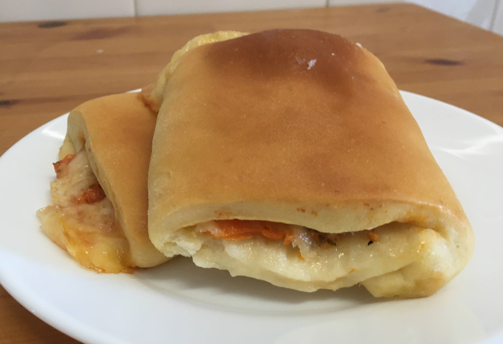

Massa para salgados assados

Ingredientes
- 25 g de açúcar
- 2 ovos
- 250 ml de leite
- 10 g de sal
- 6 g de fermento biológico seco
- 50 g de manteiga
- 600 g de farinha de trigo
Modo de preparo
- Misturar todos os ingredientes, menos a farinha.
- Acrescengtar a farinha aos poucos, sovando a massa em uma superfície enfarinhada, até dar o ponto.
- Deixar fermentar por aproximadamente 45 minutos.
- Abrir a massa, montar os salgados e deixar fermentar por mais 30 minutos.
- Assar em fôrma untada com óleo ou forrada com papel manteiga a 180º C por 20 a 30 minutos.
Observações:
- Opções de salgados: americano, esfiha, enroladinho de salsicha, pão recheado...
- Pode-se fazer na máquina de pão.
- Receita da Dona Rosa, Senac.